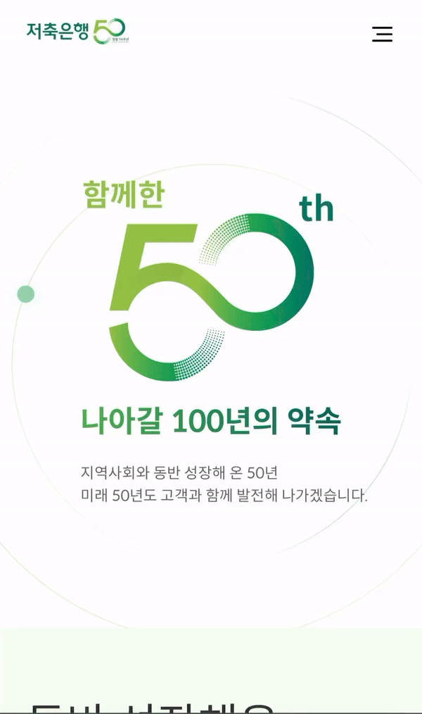
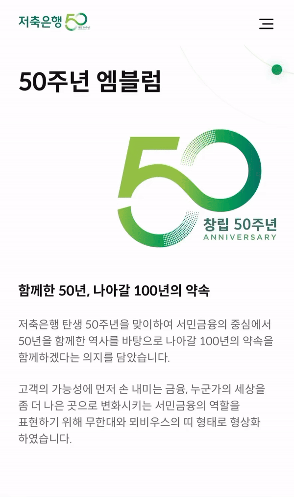
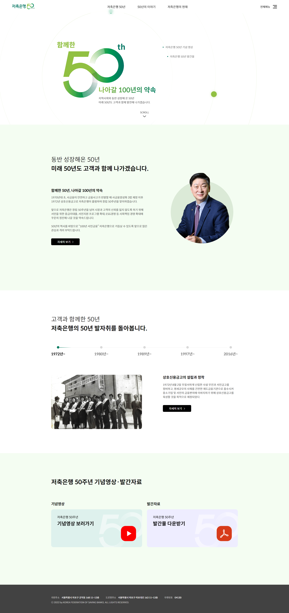
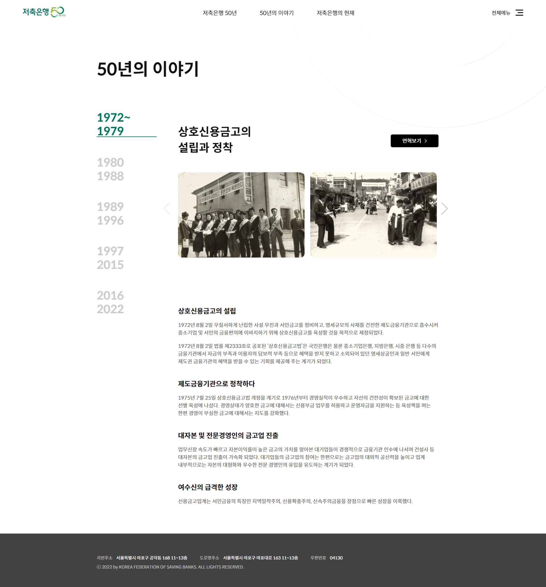

저축은행중앙회 창립 50주년을 맞이하여 기념하기 위한 사이트 구축했습니다. 이 프로젝트에서는 사용자 상호작용을 향상시키고, PC와 모바일에서 최적의 사용자 경험을 제공하기 위해 적응형 웹 디자인을 적용했습니다.
저축은행중앙회 50주년 E역사관
저축은행중앙회
(website)
저축은행중앙회 50주년 E역사관
프로젝트 개요


50th Anniversary of the Korea Federation of Savings Banks keyvisual
1. 메인 페이지
기획 디자인, 개발에 기여하여 전체 페이지의 책임을 맡아 성공적으로 사이트를 구축했습니다. Animation을 활용하여 각 페이지에 행성이 돌아가는 일관된 비주얼을 적용해서 50주년의 의미를 강조했습니다.
2. 기념사 페이지
script를 활용하여 페이지가 로드될 때 콘텐츠가 서서히 나타나는 효과 구현
3. 엠블럼 페이지
50주년 기념 로고를 '무한대' 형상으로 Animation을 활용하여 로고를 표현했습니다.
-

1. 메인 페이지
-
2. 기념사 페이지
-

3. 엠블럼 페이지
-

연혁 페이지
각 년도를 스크롤하면 sticky를 시켜 고정되게 했습니다.
-

50년의 이야기 페이지
swiper를 사용하여 각 년도를 대표하는 이미지를 간편하게 볼 수 있도록 했습니다.
-

숫자로 보는 50년 페이지
정보를 효과적으로 보여주는 인터렉션 효과를 주었습니다.
E역사관을 손쉽게 들여다 볼 수 있는
역사와 연혁
Swiper를 활용하여 웹사이트에 슬라이더 기능을 추가함으로써 콘텐츠를 돋보이게 만들고 사용자 경험을 개선했습니다.
-

메인페이지
-

50주년 이야기 페이지
사용자의 편의성을 고려한 인터페이스
적응형 디자인웹 디자인 적용
PC와 모바일 모두를 지원하는 적응형 웹 페이지를 구축하여 기기 간 일관된 사용자 경험을 제공합니다.
image